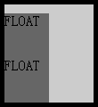
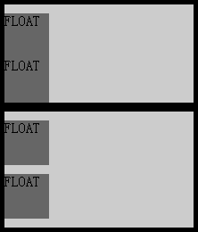

RM1010: IE6 IE7 IE8(Q) 中元素的 'padding-top' 遇到 'clear' 特性在某些情况下复制到 'padding-bottom'
标准参考
无
问题描述
IE 中触发了 hasLayout 的容器同时使用 'clear' 特性清除浮动在某些情况下导致 'padding-top' 渲染异常。
造成的影响
此问题会导致出现多余的 'padding-bottom' 间隙。
受影响的浏览器
| IE6 IE7 IE8(Q) |
|---|
问题分析
测试代码：
<div id="d" style="background:#CCC; width:100px; border:5px solid black; padding-top:10px;"> <div style="float:left; width:50px; height:50px; background:#666;">FLOAT</div> <div style="clear:left; background:#999;"></div> <div style="float:left; width:50px; height:50px; background:#666;">FLOAT</div> <div style="clear:left; background:#999;"></div> </div>
上面代码中，容器【d】宽度为100px，有10px的 'padding-top'，其内依次包含了一个左浮动 DIV、一个清除 DIV、一个左浮动 DIV、一个清除 DIV。
则此时在各浏览器中的运行效果如下：
各浏览器表现如下：
| IE6 IE7 IE8(Q) | IE(Q) FIrefox Chrome Safari Opera |
|---|---|
 |
 |
可见：
- 在 IE6 IE7 IE8(Q) 中，容器【d】的 'padding-top:10px' 由于某种原因复制到了其他区域，且无法探测出多余的两处10px间隙作用于哪一个元素；
- 在 IE(Q) FIrefox Chrome Safari Opera 中，按照W3C规范对代码进行了解释。
与 hasLayout 的关系：
测试代码：
<div style="background:#CCC; border:5px solid black; padding-top:10px;"> <div style="float:left; width:50px; height:50px; background:#666; padding:0; margin:0;">FLOAT</div> <div style="clear:left; background:#999; padding:0; margin:0;"></div> <div style="float:left; width:50px; height:50px; background:#666;">FLOAT</div> <div style="clear:left; background:#999; padding:0;"></div> </div> <div style="background:#CCC; zoom:1; border:5px solid black; padding-top:10px;"> <div style="float:left; width:50px; height:50px; background:#666; padding:0; margin:0;">FLOAT</div> <div style="clear:left; background:#999; padding:0; margin:0;"></div> <div style="float:left; width:50px; height:50px; background:#666;">FLOAT</div> <div style="clear:left; background:#999; padding:0;"></div> </div>
上面代码结构与第一节中的相同，第一组取消了 "width:100px" ，即在 IE6 IE7 IE8(Q)中无法触发容器的 hasLayout 特性；第二组在第一组的基础上增加了'zoom:1' ，即在 IE6 IE7 IE8(Q) 中重新触发了容器的 hasLayout 特性。则此时在各浏览器中的运行效果如下：
| IE6 IE7 IE8(Q) | IE8(S) FIrefox Chrome Safari Opera |
|---|---|
|  |  |
可见，这种情况出现在 IE6 IE7 IE8(Q)中容器触发了 hasLayout 特性且容器内使用了 "clear" 特性清除浮动时产生，此时容器的 "padding-top" 特性有可能在容器内一些区域被复制，从而出现多余间距。
解决方案
方案1.不触发容器的 hasLayout 特性；
方案2. 若容器触发了hasLayout 特性，尽量不为其设置 'padding-top' 特性；
方案3. 若容器触发了hasLayout 特性，且必须为容器设置 'padding-top' 特性，可以考虑使用 ':after' 的清除方式。
针对方案3的参考代码如下：
<style>
#d:after { display:block; content:""; height:0; clear:both; }
</style>
<div id="d" style="background:#CCC; width:100px; border:5px solid black; padding-top:20px;">
<div style="float:left; width:50px; height:50px; background:#666; padding:0; margin:0;">FLOAT</div>
</div>
参见
知识库
相关问题
测试环境
| 操作系统版本: | Windows 7 Ultimate build 7600 |
|---|---|
| 浏览器版本: |
IE6 IE7 IE8 Firefox 3.6 Chrome 4.0.302.3 dev Safari 4.0.4 Opera 10.60 |
| 测试页面: | padding_top_and_clear.html |
| 本文更新时间: | 2010-06-18 |
关键字
float clear container hasLayout padding-top 清除 浮动 边白 容器